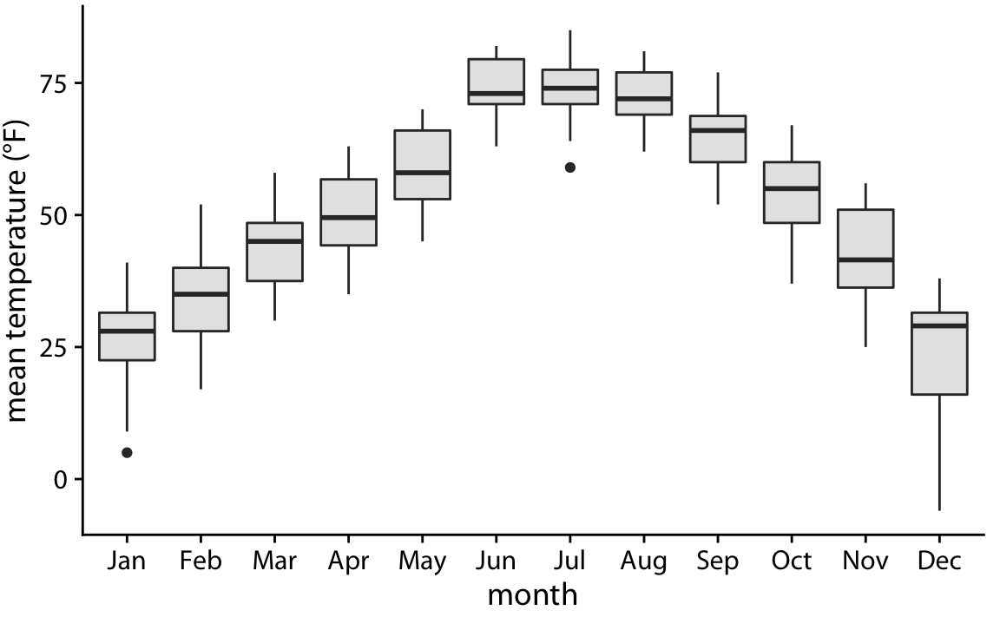

Visualização de Dados
ESTAT0011 – Estatística Aplicada
Prof. Dr. Sadraque E. F. Lucena
sadraquelucena@academico.ufs.br
Visualização de Dados Categóricos
Quando os dados são categóricos, o objetivo da visualização é representar a magnitude de valores quantitativos associados a categorias.
- Exemplos: vendas de carros por marca, população por cidade, idade de atletas por esporte.
Nesses casos, a visualização padrão é o gráfico de barras, com variações como barras simples, agrupadas ou empilhadas.
Visualização de Contagens
Gráfico de Barras
Considere o total de vendas de ingressos dos filmes mais populares em 2024 no Brasil.
| 1 |
Divertida Mente 2 |
R$ 443.789.000 |
| 2 |
Moana 2ª |
R$ 177.353.562 |
| 3 |
Deadpool & Wolverine |
R$ 156.920.000 |
| 4 |
Meu Malvado Favorito 4 |
R$ 151.710.000 |
| 5 |
Mufasa: O Rei Leão |
R$ 125.414.354 |
| 6 |
Ainda Estou Aqui |
R$ 117.630.000 |
Fonte: Wikipedia.
Visualização de Contagens
Gráfico de Barras
- Esse tipo de dado é comumente visualizado com barras verticais.
- Para cada filme, desenhamos uma barra que começa no zero e se estende até o valor correspondente à bilheteria daquele ano.
Fonte: Wikipedia.
Visualização de Contagens
Gráfico de Barras
- Quando os rótulos de cada barra ocupam muito espaço horizontal, você pode rotacionar o gráfico.
Fonte: Wikipedia.
Visualização de Contagens
Gráfico de Barras
Fonte: IBGE.
Visualização de Contagens
Barras Agrupadas
- A visualização abaixo fornece comparação entre renda média de cada região na mesma faixa de idade.
Fonte: IBGE.
Visualização de Contagens
Barras Agrupadas
- Se quisermos comparar a distribuição da renda média ao longo das faixas etárias para cada região, o gráfico abaixo é melhor.
Fonte: IBGE.
Visualização de Contagens
Barras Empilhadas
- Cada segmento corresponde a uma subcategoria, e a altura total da barra representa a soma de todas as subcategorias.
Dados de passagerios e tripulantes do Titanic.
Visualização de Proporções
Usado para mostrar como um todo se divide em partes que representam proporções individuais. Exemplos:
Proporção de gêneros em um grupo.
Percentual de votos para partidos.
Participação de mercado de empresas.
Desafio: Pode ser complexo quando há muitas partes ou quando as proporções mudam ao longo do tempo.
Regra de Ouro: Sempre escolha a visualização que melhor se adapta ao seu conjunto de dados e destaca as características que você quer mostrar.
Visualização de Proporções
Gráfico de Setores (Pizza)
Divide um círculo em fatias, onde a área de cada fatia é proporcional à fração do total.
Quando usar:
Para enfatizar frações simples (ex: metade, um terço).
Com pequenos conjuntos de dados (poucas categorias).
São visualmente claros para mostrar a relação das partes com o todo em um cenário único.
Muito usado em apresentações, mas criticado por cientistas de dados.
- Dificulta a comparação precisa entre categorias (especialmente com muitas partes ou valores similares).
Visualização de Proporções
Gráfico de Setores (Pizza)
Visualização de Distribuições
Histogramas
Quando os dados são quantitativos, o histograma é uma ótima opção para compreender seu comportamento.
Vamos considerar as idades dos passageiros do Titanic.
| 0–5 |
36 |
| 6–10 |
19 |
| 11–15 |
18 |
| 16–20 |
99 |
| 21–25 |
139 |
| 26–30 |
121 |
| 31–35 |
76 |
| 36–40 |
74 |
| 41–45 |
54 |
| 46–50 |
50 |
| 51–55 |
26 |
| 56–60 |
22 |
Visualização de Distribuições
Histogramas
- Podemos visualizar os dados por meio de um histograma.
Visualização de Distribuições
Histogramas
Visualização de Distribuições
Histogramas

Visualização de Distribuições
Histogramas
- Uma regra útil para determinar o número de intervalos é usar a Rega de Sturges. Segundo ela, o número de intervalos (\(k\)) deve ser: \[
k = 1 + \log_2(n)
\] ou \[
k = 1 + 3.322\times\log_{10}(n),
\] em que \(n\) é o tmanho da amostra.
Visualização de Distribuições
Gráfico de densidade

Visualização de Distribuições
Gráfico de densidade
- O gráfico de densidade também pode ser usado para visualizar o comportamento de vários grupos, geralmente ao mesmo tempo.

Temperatura diária média ao longo dos meses em Lincoln, Nebraska.
Visualização de Distribuições
Boxplot
Boxplot, ou diagrama de caixa, é um gráfico que divide os dados em quartis
Ele exibe cinco estatísticas principais:
Visualização de Distribuições
Boxplot
- O boxplot é muito útil para comparar a distribuição de grupos diferentes.
Temperatura diária média ao longo dos meses em Lincoln, Nebraska.
Visualização de Distribuições
Gráfico de Violino
- Combina um boxplot com uma estimativa de densidade de kernel.
- Quanto mais largo o violino em um determinado ponto, maior a concentração de dados naquele valor.
Visualização de Distribuições
Gráfico de Violino
- Ele também é útil para visualizar o comportamento de uma variável e diferentes grupos.
Temperatura diária média ao longo dos meses em Lincoln, Nebraska.
Visualização de Associações
Gráfico de dispersão
- Serve para visualização de duas variáveis ao mesmo tempo.
- Auxilia a compreensão da relação entre variáveis.

Tamanho da cabeça de uma espécie de pássaro e sua massa corporal.
Visualização de Associações
Gráfico de dispersão
- É possível adicionar uma terceira variável para ajudar numa melhor compreensão dos dados.

Tamanho da cabeça de uma espécie de pássaro e sua massa corporal segundo sexo.
Visualização de Dados no Tempo
Gráfico de Linha para Série temporal
- Mais comum e eficaz para mostrar como uma ou mais variáveis numéricas evoluem ao longo do tempo.
Submissões mensais ao servidor de pré-publicações bioRxiv.
Visualização de Dados no Tempo
Gráfico de Linha para Série temporal
Auxilida na visualização de:
- Tendências: Permitem visualizar facilmente a tendência geral dos dados ao longo do tempo (crescimento, declínio, estabilidade).
- Padrões: Ajudam a identificar padrões recorrentes (sazonalidade, ciclos).
- Flutuações: Mostram variações e ruídos nos dados.
- Pontos de Inflexão: Destacam momentos de mudança significativa ou eventos importantes.
- Comparação: Quando múltiplas séries temporais são plotadas no mesmo gráfico (com linhas diferentes ou cores diferentes), eles são excelentes para comparar o comportamento de diferentes variáveis ou grupos ao longo do mesmo período.
Visualização de Dados no Tempo
Visualização Múltipla
- O gráfico de linha permite a visualização múltipla para facilitar comparações.

Submissões mensais a três servidores de pré-publicações cobrindo pesquisa biomédica.